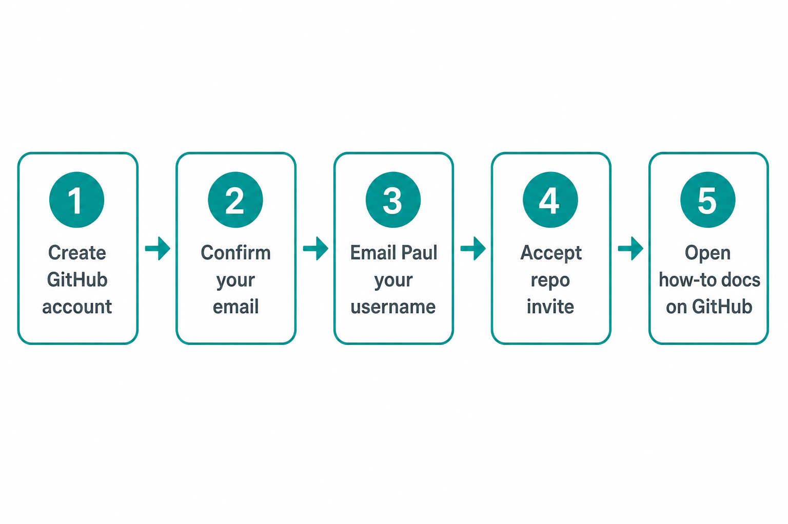
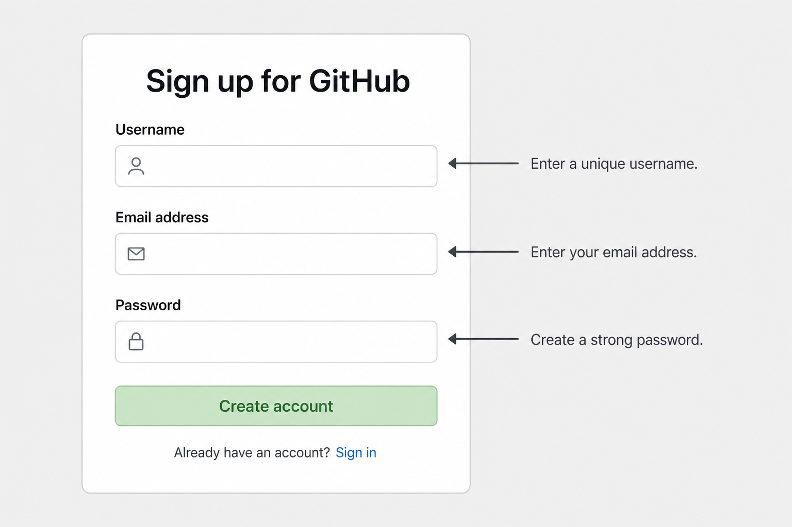
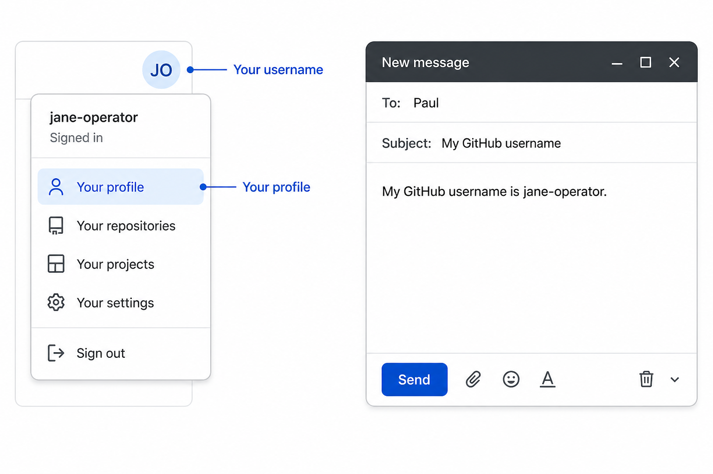
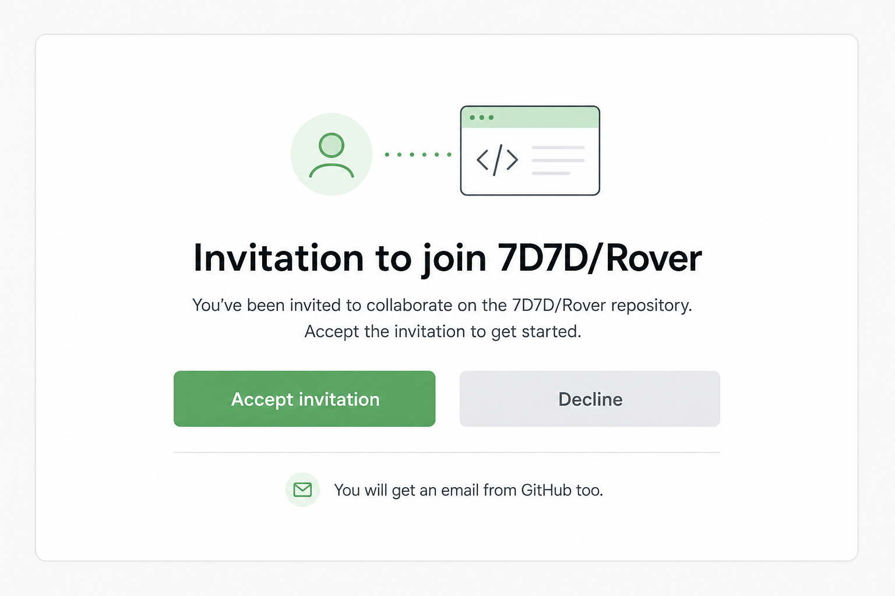
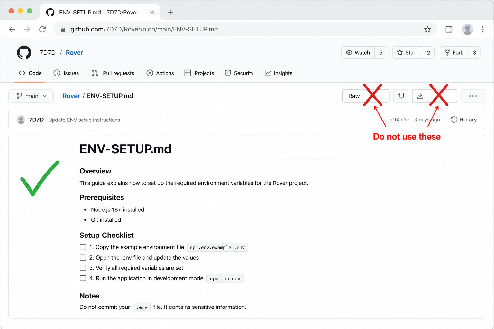

Rover how-tos: get GitHub access (gateway)
This is the starting document for Rover operators. It is not about coding. It only gets you a free GitHub account, access to the private Rover folder of how-to guides, and shows you how to read those guides in a normal web browser.
After you finish, your first how-to is Rover — from discovery to launch (USER-FLOW.md). Next, set up keys with Rover .env & API keys setup (ENV-SETUP.md).

For Paul (one-time: turn this into a Google Doc)
- Create a blank Google Doc.
- Open this HTML file in a browser. Select all → Copy → Paste into the Doc. If images do not paste, insert them from docs/images/github-gateway/.
- Replace YOUR_EMAIL below with the address operators should use to send their username.
- Share the Google Doc with operators as Viewer. Keep GitHub as the source of truth for USER-FLOW, ENV-SETUP, and other how-tos.
Operators: ignore this box. Start at What this is.
What this is
Rover’s detailed instructions live in a private GitHub repository:
https://github.com/7D7D/Rover
GitHub is a website that stores files. You will use it like a library of how-to pages—not like a programming tool. You do not need Cursor, VS Code, or any developer software.
Step 1 — Create a free GitHub account
- Open https://github.com/signup in your browser (Chrome, Edge, or Safari).
- Choose a username (letters, numbers, hyphens—this is public; pick something professional).
- Enter an email address you can check.
- Create a password.
- Complete the puzzle / verification if asked.
- Click Create account (wording may vary slightly).
- If GitHub offers paid plans or “Pro” trials, choose the free option and skip extras.

Confirm your email
- Open your email inbox.
- Find the message from GitHub (check Spam if needed).
- Click the confirm / verify link.
You cannot fully use GitHub until the email is confirmed.
Official link: Sign up for GitHub
Step 2 — Tell Paul your GitHub username
Paul must invite you before you can see the private Rover docs.
- Sign in at https://github.com.
- Click your profile picture (usually top-right).
- Your username appears near the top of that menu (and on “Your profile”).
- Email Paul using the template below.
To: YOUR_EMAIL
Subject: My GitHub username
Body:
Hi Paul,
My GitHub username is: REPLACE_WITH_YOUR_USERNAME
Please invite me to the Rover docs repo.
Thanks

Wait until Paul confirms he sent the invite (often within a day).
Step 3 — Accept the invitation
- Check your email for a message from GitHub about an invitation to 7D7D/Rover.
- You can also open https://github.com/notifications while signed in and look for the invitation.
- Open the invite page and click Accept invitation.

If the button is missing, sign out, sign back in with the same account whose username you sent Paul, and open the invite link again.
Step 4 — How to read how-to docs on GitHub
- Open a document link Paul sends you, or go to the repo: https://github.com/7D7D/Rover
- Click the docs folder, then open a .md file (for example USER-FLOW.md).
- Read the main page in the browser. Headings, links, and pictures should look normal.
Do not click Raw or Download for normal reading—those show code-like text or a file download instead of the friendly page.

Tips:
- Blue text is usually a clickable link.
- Pictures appear in the page; scroll slowly on long guides.
- Bookmark pages you use often.
Step 5 — Your first how-to documents
After you can open the repo, read these in order:
- Rover — from discovery to launch (what you do in the product, with time estimates)
https://github.com/7D7D/Rover/blob/master/docs/USER-FLOW.md
- Rover .env & API keys setup (get Settings → API/Other green)
https://github.com/7D7D/Rover/blob/master/docs/ENV-SETUP.md
Other guides live in the same folder:
https://github.com/7D7D/Rover/tree/master/docs
Paul may send you additional links for Phone, metrics, and other topics as needed.
Troubleshooting
| Problem |
What to try |
| 404 or “page not found” on the repo |
You are not invited yet, or you are signed into a different GitHub account. Accept the invite, then try again while signed in. |
| No invite email |
Check Spam; open github.com/notifications; confirm Paul has your exact username. |
| Page looks like code (# headings, []() links) |
You opened Raw. Go back and open the normal file page (no Raw). |
| Images missing |
Same as above—use the rendered file view, not Raw. |
| Forgot password |
Use “Forgot password” on github.com/login. |
Quick checklist
- Create account at https://github.com/signup
- Confirm email
- Email YOUR_EMAIL your GitHub username
- Accept invite to 7D7D/Rover
- Open USER-FLOW.md and read it
- Then open ENV-SETUP.md and follow it
You are done with this gateway when you can open those pages and read them in the browser.